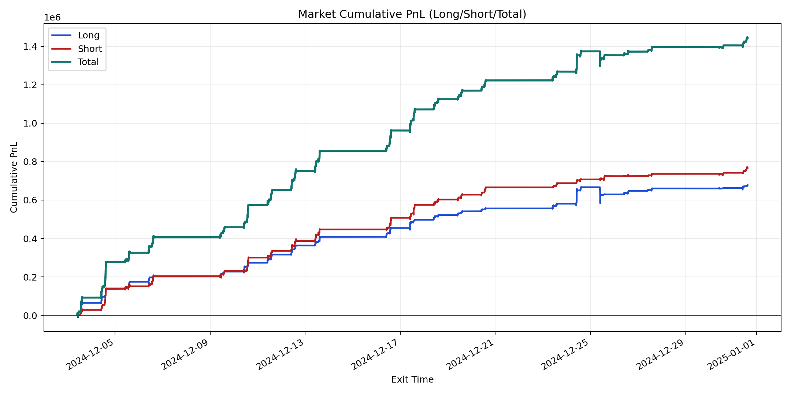
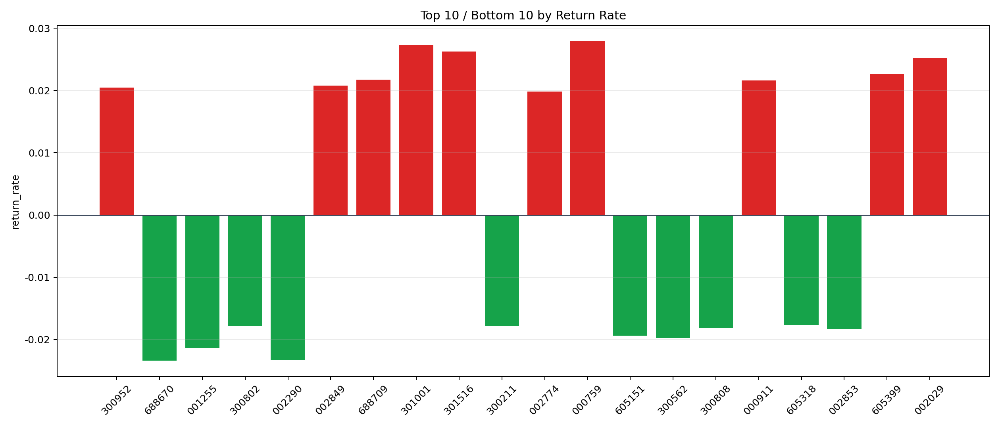

| repo_root | /home/haoranyou/data/output/alpha0.4_1w_5s_3ticks |
|---|---|
| period_months | 1 |
| period_label | 2024-12-03_to_2024-12-31 |
| start_time | 2024-12-03 09:50:17 |
| end_time | 2024-12-31 15:00:00 |
| n_trades | 97729 |
| n_symbols | 1641 |
| total_pnl | 1444024.4864 |
| long_total_pnl | 677206.4741500001 |
| short_total_pnl | 766818.0122499998 |
| total_entry_notional | 905723931.0 |
| long_entry_notional | 317925783.0 |
| short_entry_notional | 587798148.0 |
| total_return_rate | 0.0015943318233908959 |
| long_return_rate | 0.002130077239284491 |
| short_return_rate | 0.0013045601025779342 |
| top_symbols_by_return | ["000759", "301001", "301516", "002029", "605399", "688709", "000911", "002849", "300952", "002774"] |
| bottom_symbols_by_return | ["688670", "002290", "001255", "300562", "605151", "002853", "300808", "300211", "300802", "605318"] |

